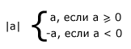
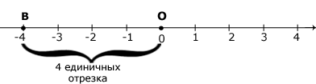

|
ƒва противоположных числа, например +7 и -7, отличаютс€ знаками, но записываютс€ одинаковыми цифрами. √овор€т, что они имеют одинаковые абсолютные величины. јбсолютна€ величина каждого из них равна 7.
ћодулем (абсолютной величиной) положительного числа €вл€етс€ само это число, модулем отрицательного числа - противоположное ему число, модулем числа 0 - само число 0.
ћодуль числа а обозначают | а |. “аким образом,

Ќапример, | -13 | = 13; | 4 | = 4; | 0 | = 0.
≈сли отметить точку, соответствующую данному числу на координатной пр€мой, то модуль числа будет показывать на каком рассто€нии (в единичных отрезках) находитс€ эта точка от начала отсчета, а знак числа - с какой стороны от начала отсчета она расположена.
Ќапример, возьмем точку ј, соответствующую числу -4. ќна расположена слева от нул€ на рассто€нии четыре единичных отрезка, так как Ц 4 Ц отрицательное число и | -4 | = 4.

ѕоэтому часто модулем числа называют рассто€ние на координатной пр€мой от начала отсчета до точки, соответствующей этому числу.
—лово модуль (modulus) в переводе с латинского €зыка означает Ђмераї.
ѕротивоположные числа, имеют один и тот же модуль.
Ќапример, 5 и -5: | 5 | = 5; | -5 | = 5.
Ёти числа расположены на координатной пр€мой на одинаковом рассто€нии от начала отсчета.
|